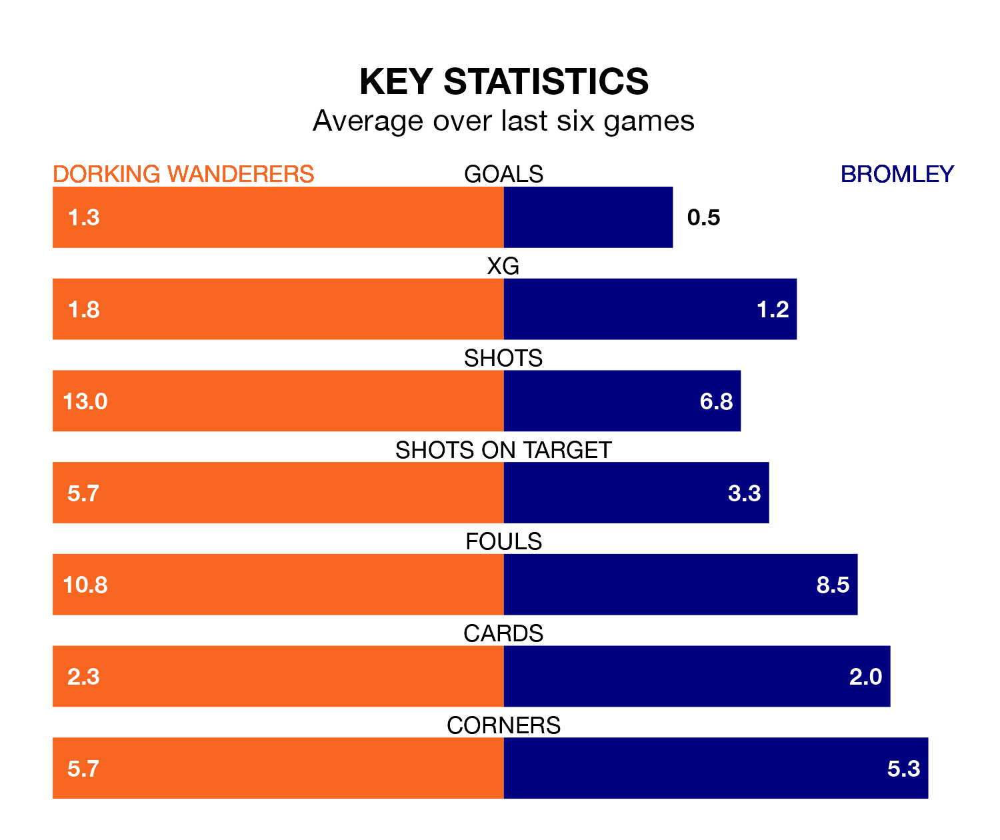

Struggling Dorking Wanderers face Bromley at the Meadowbank Stadium on Friday looking to build on a win in their last league outing.
After securing all three points with a 0-6 victory over Barnet on March 23, Wanderers sit 23rd in the National League.
They travel to play a Bromley side third in the standings, who lost in their last match, 2-0 against York City.
With 47 goals in 40 games so far this season, Dorking are scoring at below the league average rate with 1.2 goals per game. And they are conceding more than average, letting in 73 goals at a rate of 1.8 per game.
Bromley, meanwhile, are above average scorers, with 1.6 goals per game, compared to a league average of 1.5. They have conceded 1.1 goals per game.
Wanderers are in bad form in the National League, with one win and a draw from their last six games.
With two wins and two draws over that period, the Ravens's form is better – they have taken eight points from 18, compared to the home team's four.
In the last five years, Dorking and Bromley have played each other on four occasions. Dorking won one of them and Bromley the other.
On average, Wanderers scored 1.5 goals and the Ravens 1.8 in those matches.
Their last meeting was on October 24, when Bromley won 2-1 at home.
Updated: 12:16 (UTC), 25/03/24